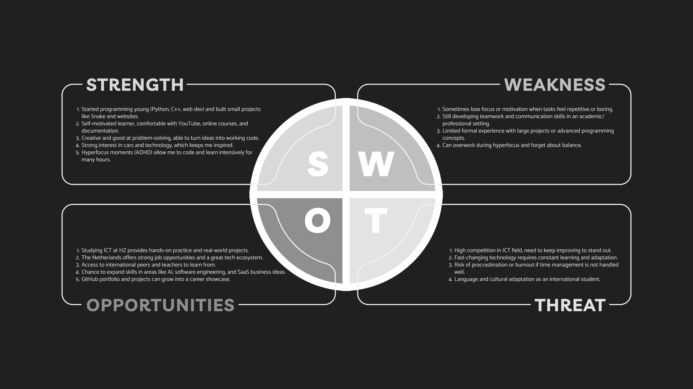

Personal SWOT Analysis

-
Strengths (S)
- Started programming young (Python, C++, web dev) and built small projects like Snake and websites.
- Self-motivated learner, comfortable with YouTube, online courses, and documentation.
- Creative and good at problem-solving, able to turn ideas into working code.
- Strong interest in cars and technology, which keeps me inspired.
- Hyperfocus moments (ADHD) allow me to code and learn intensively for many hours.
-
Weaknesses (W)
- Sometimes lose focus or motivation when tasks feel repetitive or boring.
- Still developing teamwork and communication skills in an academic/professional setting.
- Limited formal experience with large projects or advanced programming concepts.
- Can overwork during hyperfocus and forget about balance.
-
Opportunities (O)
- Studying ICT at HZ provides hands-on practice and real-world projects.
- The Netherlands offers strong job opportunities and a great tech ecosystem.
- Access to international peers and teachers to learn from.
- Chance to expand skills in areas like AI, software engineering, and SaaS business ideas.
- GitHub portfolio and projects can grow into a career showcase.
-
Threats (T)
- High competition in the ICT field, need to keep improving to stand out.
- Fast-changing technology requires constant learning and adaptation.
- Risk of procrastination or burnout if time management is not handled well.
- Language and cultural adaptation as an international student.